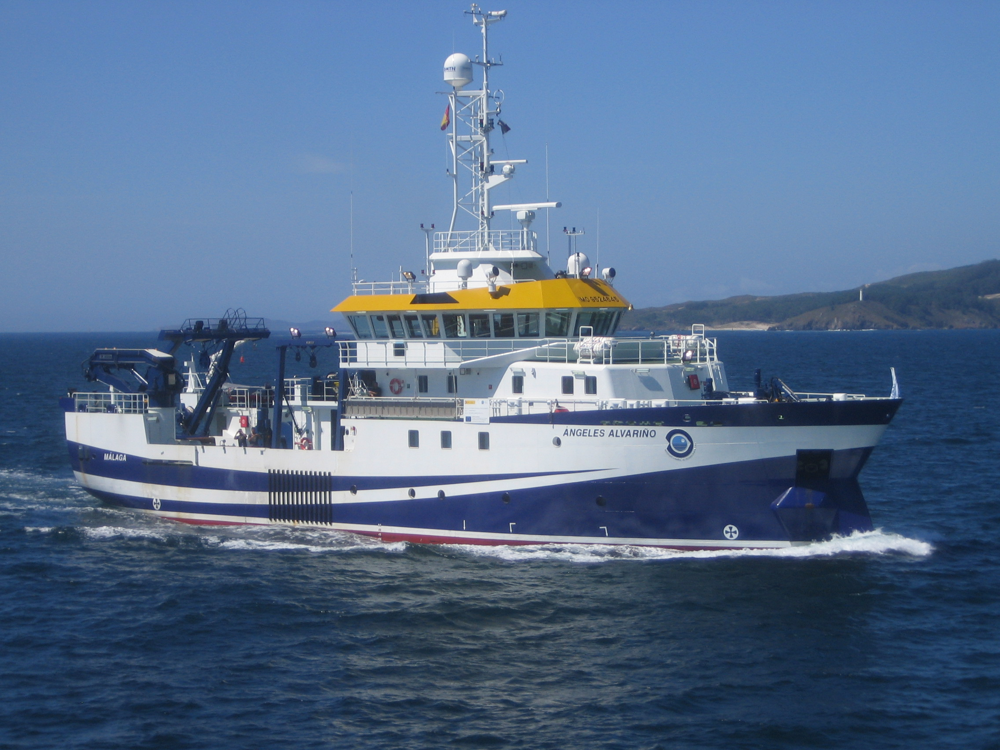

El proyecto QUAR (Quantitative Assessment in R) es una iniciativa del Instituto Español de Oceanografía (IEO) liderada por la investigadora María Soto cuyo objetivo es dotar al área de pesca de un equipo especialista en matemáticas, estadística, programación y uso de R aplicado a la evaluación de stocks que pueda acoger y dar respuesta a las necesidades de asesoramiento científico de la PPC con un nivel de complejidad elevado en materia de la evaluación y gestión de stocks ante los retos metodológicos que deben hacer frente los evaluadores en las diferentes ORPs.
El núcleo del proyecto QUAR está formado por un equipo de expertos en evaluación con formación matemática y/o alto nivel de conocimiento en programación y utilización de librerías de R aplicadas a la modelización de datos pesqueros. El proyecto está enfocado a la identificación de los puntos más importantes en evaluación y gestión de pesquerías a nivel nacional e internacional, tanto para stocks pobres en datos como stocks ricos en datos, y su investigación aplicada a los stocks del PNDB. Los resultados serán reflejados en publicaciones en revistas de impacto. La investigación va más allá del trabajo que se realice en el seno de los propios programas de pesca a los que se encuentren vinculados dichos stocks, ya que el objetivo es mejorar los métodos de evaluación y gestión de pesquerías a nivel global, teniendo un perspectiva cuantitativa general del estado de las pesquerías, sus datos y las metodologías de evaluación y gestión para los stocks de interés comercial para España.

Algunos de los temas prioritarios dentro de la evaluación de stocks en el marco del proyecto QUAR son:
1. Asistir a los grupos más importantes sobre métodos de evaluación identificados dentro de las reuniones financiables por el PNDB e establecer estrategias y líneas de investigación actuales y futuras para la evaluación y gestión de pesquerías españolas.
2. Modelización espacial frecuentista y bayesiana de índices de abundancia a partir de datos comerciales, (CPUE).
3. Evaluación y aplicación de métodos desarrollados en R para DLS y data rich stocks.
4. Evaluación de estrategias de gestión (MSE) a partir de Life History Traits para stocks pobres en datos y otros métodos para stocks ricos en datos.
5. Evolución en modelización de pesquerías con datos geoespaciales.
6. Ciencia de datos en pesquerías y desarrollo de aplicaciones recientes en R.
7. Metodologías para la Gestión de Pesquerías Basada en el Ecosistema (EBMF) (landing obligation, cuantificación de descartes, impacto de la pesca en los stocks y el ecosistema, variables ambientales, cambio climático, pesquerías mixtas, etc) y el principio de precaución (PA) (tratamiento de las distintas fuentes de incertidumbre en el la evaluación y gestión de las pesquerías).
El objetivo del proyecto QUAR es, por tanto, dotar al área de pesca de un equipo especialista en matemáticas, estadística, programación y uso de R aplicado a la evaluación de stocks que pueda acoger y dar respuesta a las necesidades de asesoramiento científico de la PPC con un nivel de complejidad elevado en materia de la evaluación y gestión de stocks y dentro del marco del PNDB.
El resumen del proyecto QUAR THREE lo puedes descargar en este archivo powerpoint